Creating a billiards simulator: the transition from equations to code
Outline
In the first and second posts of this series, I discussed ad nauseam the physics and algorithmic theory behind pool simulation. With this all now behind me, it's time to take this theory to the streets.

The skeleton
This project started with 2 main modules: engine.py and physics.py. The rationale for this design was to separate the physics from the objects that the physics acts on (balls, cues, cushions, etc).
With this in mind, engine.py implements the shot evolution algorithm by coordinating when object states should be modified, and physics.py implements the physics that provides the specific rules for how the modification should be carried out. This separation of responsibility allows different physics models to be plugged in or out at will.
Though the codebase has changed dramatically since this original implementation, this central design principle has remained unchanged.
Ball trajectories
Want to follow along?
If you want to follow along, go ahead and clone the repository, and then checkout this branch
git clone https://github.com/ekiefl/pooltool.git
cd pooltool
git checkout f79c801_offshoot
My first goal was to start dead simple: visualize the trajectory of the cue ball that has been struck with a cue stick, assuming there are no cushions, pockets, or other balls. I implemented this in the engine.ShotSimulation class.
Let's peer in.
In [1]: from psim.engine import ShotSimulation
...: shot = ShotSimulation()
...: shot.setup_test()
shot instantiates objects you wouldn't be surprised to find in a pool simulation: Ball, Table, and Cue objects. For example, here are the attributes of the cue ball.
In [2]: vars(shot.balls['cue'])
Out[2]:
{'id': 'cue',
'm': 0.170097,
'R': 0.028575,
'I': 5.555576388825e-05,
'rvw': array(
[[0.686, 0.33 , 0. ],
[0. , 0. , 0. ],
[0. , 0. , 0. ]]
),
's': 0,
'history': {'t': [], 'rvw': [], 's': []}}
Of these attributes, the most important is rvw, which stores the ball state as a numpy array. rvw is named after the 3 state vectors , , and .
rvw[0,:]is the displacement vectorrvw[1,:]is the velocity vectorrvw[2,:]is the angular velocity vector .
This means the velocity of the cue ball is
In [3]: shot.balls['cue'].rvw[1,:]
Out[3]: array([0., 0., 0.])
In other words, it's not moving. To simulate something meaningful, energy has to be added to the system. In billiards, that's done with the Cue:
In [4]: vars(shot.cue)
Out[4]: {'M': 0.567, 'brand': 'Predator'}
This is a 20oz Predator--these things are expensive. Unsurprisingly, shot.cue has a method for striking balls.
In [5]: shot.cue.strike?
Signature: shot.cue.strike(ball, V0, phi, theta, a, b)
Docstring:
"""
Strike a ball
, - ~ ,
◎───────────◎ , ' ' ,
│ │ , ◎ ,
│ / │ , │ ,
│ / │ , │ b ,
◎ / phi ◎ , ────┘ ,
│ /___ │ , -a ,
│ │ , ,
│ │ , ,
◎───────────◎ , '
bottom rail ' - , _ , -
______________________________
playing surface
Parameters
==========
ball : engine.Ball
A ball object
V0 : positive float
What initial velocity does the cue strike the ball?
phi : float (degrees)
The direction you strike the ball in relation to the bottom rail
theta : float (degrees)
How elevated is the cue from the playing surface, in degrees?
a : float
How much side english should be put on? -1 being rightmost side of ball, +1 being
leftmost side of ball
b : float
How much vertical english should be put on? -1 being bottom-most side of ball, +1 being
topmost side of ball
File: ~/Software/pooltool_testing/psim/engine.py
Type: method
"""
This method ultimately calls upon physics.cue_strike, which implements the cue-ball interaction physics described here.
I'm going to strike the cue ball with a center-ball hit straight down the table with the cue completely level with the table . I'll use a relatively slow impact speed of .
In [5]: shot.cue.strike(
...: ball = shot.balls['cue'],
...: V0 = 0.5,
...: phi = 90,
...: theta = 0,
...: a = 0,
...: b = 0,
...: )
In [6]: shot.balls['cue'].rvw
Out[6]:
array([[0.686, 0.33 , 0. ],
[0. , 0.877, 0. ],
[0. , 0. , 0. ]])
After calling the method, the cue ball now has a velocity in the direction. Since it was a center ball hit with no cue elevation, the ball has no spin. i.e. .
At this point, no time has passed--the ball state has merely been modified according the physics of shot.cue striking self.balls['cue']. So then how does the shot evolve?
Rather than implementing the event-based shot evolution algorithm I wouldn't shut up about, I implemented some dinky discrete time evolution algorithm just to get the ball rolling. It's a for loop that increments by .
q = self.balls['cue']
for t in np.arange(0, 10, 0.05):
rvw, s = physics.evolve_ball_motion(
rvw=q.rvw,
R=q.R,
m=q.m,
u_s=self.table.u_s,
u_sp=self.table.u_sp,
u_r=self.table.u_r,
g=psim.g,
t=t,
)
q.store(t, *rvw, s)
The workhorse is evolve_ball_motion, which calculates the new state for each time step. It delegates to evolve_slide_state, evolve_roll_state, and evolve_spin_state, all of which update the ball state according to the appropriate equations of motion.
To test if evolve_ball_motion and its delegates are behaving, I called shot.start, which carries out the discrete time evolution and plots the ball's trajectory over time.
In [5]: shot.start()
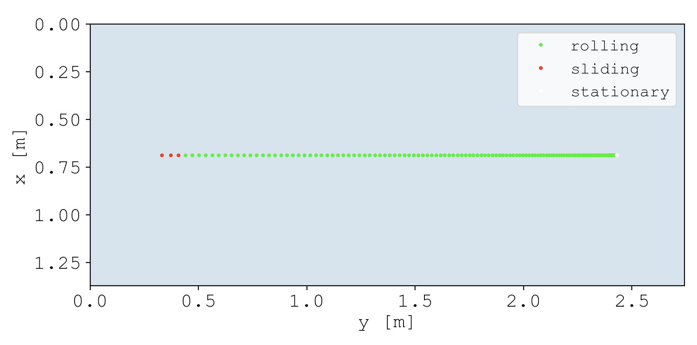
Immediately after being hit, the ball is sliding. Yet after a short amount of time, the relative velocity converges to , which defines the transition from sliding to rolling. Once rolling, the ball continues to roll until it reaches the stationary state.
If a picture says a thousand words, a video says a thousand pictures. Before going any further, I needed a way to animate shots because I'm already bored of these static plots. I wasn't looking for perfection, I just needed something to animate trajectories. For this, I found pygame. It just celebrated its 20th anniversary, which is pretty impressive for a python package.
I implemented the module psim.ani.animate, which animates ball trajectories using pygame. For the sake of demonstration, this functionality already exists in the branch we're using.
Let's animate the shot.
In [5]: shot.start(plot=False)
In [6]: shot.animate(flip=True) # Flip orientation to be horizontal
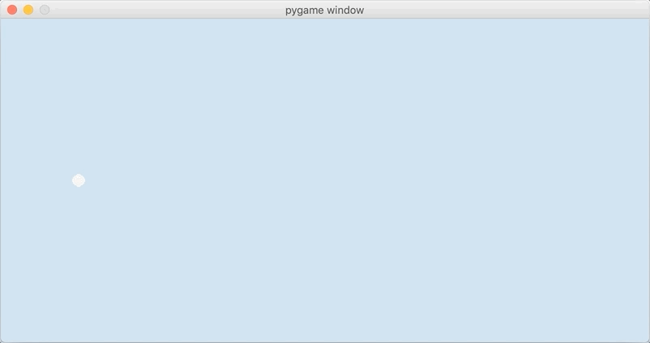
That's better.
Getting a little more brave, I wanted to try a massé shot, which you can watch the pros do here:
All Swerve Snooker Shots 2016-2019 (Curve Ball Vertical Spin Masse) Youtube Video
To achieve this effect, you have to strike down on the cue ball with a sizable amount of side-spin .
In [7]: shot.cue.strike(
...: ball = shot.balls['cue'],
...: V0 = 1,
...: phi = 90,
...: theta = 20,
...: a = -0.5,
...: b = 0.0,
...: )
...: shot.start(plot=False)
...: shot.animate(flip=True)
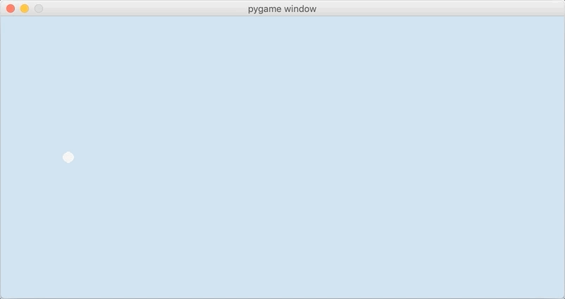
And voila. Note that all of the curvature takes place in the sliding state. This is because the rolling state by [definition]({{ site.url }}/2020/04/24/pooltool-theory/#--case-3-rolling) has a relative velocity of , which is a requirement for curved trajectories.
By the way, all sliding state trajectories under the [arbitrary spin model]({{ site.url }}/2020/04/24/pooltool-theory/#3-ball-with-arbitrary-spin) take the form of a parabola. I never proved this but Dr. Dave Billiards did here.
Next, I tried to apply insane levels of massé, like this guy:
Super Trick Shots with Mezz Masse Cue by Florian Venom Kohler Youtube Video
Specifically, I tried to tune the parameters to remake the shot at 0:30s. After fumbling around, I ended up with these shot parameters.
In [8]: shot.balls['cue'].rvw[0] = [0.18, 0.37, 0]
...: shot.cue.strike(
...: ball = shot.balls['cue'],
...: V0 = 1.15,
...: phi = 335,
...: theta = 55,
...: a = 0.5,
...: b = -0.0,
...: )
...: shot.start(plot=False)
...: shot.animate(flip=False)

This may not be perfect, but it's close. Yes.
Being able to recapitulate Florian's shot allows me to answer the following question: what insane levels of spin are required to pull this shot off? Well, In RPMs, the initial rotational speed of the cue ball is
In [21]: np.linalg.norm(shot.balls['cue'].rvw[2])/np.pi*60
Out[21]: 4374.123861245154
RPM. That's... that's too much, right? Well, the same guy put out this video where he purports his RPM for a different shot to be . So I'm certainly in the ball park. Maybe he can get up to RPM, or maybe my simulated cloth had a higher coefficient of sliding friction, requiring higher RPM.
Overall, these trajectories have me convinced I'm not screwing anything up royally.
Event-based evolution algorithm
So far I've been evolving the simulation by incrementing time in small discrete steps (aka a discrete time evolution algorithm. Yet moving forward, I've opted to use the event-based evolution algorithm for its superior accuracy and computational efficiency.
The premise of the algorithm is this:
- We have beautiful equations of motion for each ball that collectively describe the evolution of the system state. Great.
- But events between interfering parties (e.g. a ball-ball collision) disrupt the validity of these equations, since they assume each ball acts in isolation.
- Even still, the equations for each ball are valid up until the next event.
- So the algorithm works by evolving the system state directly up until the next event, at which time the event must be resolved (e.g. a ball-ball collision event is resolved by applying the ball-ball interaction equations), and then the process repeats itself: the next event is found and the system state is evolved up until the next event.
- There's only one way to calculate when the next event occurs: calculating the time until every single possible next event. By definition of next event, the next event is the event that occurs in the least amount of time.
If you want an in-depth explanation on the event-based evolution algorithm, I may have created the most extensive learning resource on the topic in my [last post]({{ site.url }}/2020/12/20/pooltool-alg/).
Implementing transitions
All events are either transitions, or they are collisions (details here). Since there are no collisions yet, I decided to implement the algorithm using just transition events to start. Transition events mark the transitioning of a ball from one motion state to another (e.g. from rolling to stationary).
Let's take a look.
Want to follow along?
For demo purposes, I compiled my progress into a branch. If you want to follow along, go ahead and check(out) it out.
git clone https://github.com/ekiefl/pooltool.git
cd pooltool
git checkout edfc866_offshoot
Like before, I created an instance of ShotSimulation, and then I set up a pre-baked system state specified by the keyword straight_shot
In [1]: import psim.engine as engine
...: shot = engine.ShotSimulation()
...: shot.setup_test('straight_shot')
Next, I struck down on the cue ball with bottom-left english.
In [2]: shot.cue.strike(
...: ball = shot.balls['cue'],
...: V0 = 1.35,
...: phi = 97,
...: a = 0.3,
...: b = -0.3,
...: theta = 10,
...: )
To see what this system state looks like and how it evolves, here is the discrete time evolution.
In [3]: shot.simulate_discrete_time()
...: shot.animate(flip=True)
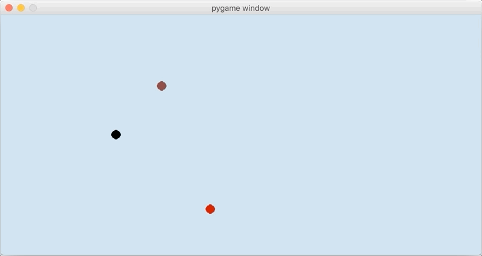
The cue ball starts sliding (red) and then transitions to rolling (green). Offscreen, it transitions to stationary. Because I struck down with side english, there is a slight masse (curve) in the trajectory. In total, there are two transition events: (1) a sliding-rolling transition event and (2) a rolling-stationary transition event.
In comparison, this is what happens when the system state is evolved using the event-based algorithm.
In [4]: shot.setup_test('straight_shot')
...: shot.cue.strike(
...: ball = shot.balls['cue'],
...: V0 = 1.35,
...: phi = 97,
...: a = 0.3,
...: b = -0.3,
...: theta = 10,
...: )
...: shot.simulate_event_based()
...: shot.animate(flip=True)
There's only 3 snapshots of the system state: at the initial time, at the sliding-rolling transition time, and at the rolling-stationary transition time. That is the beauty of the event-based evolution algorithm--rather than evolving in small time steps, the system state is evolved directly to the next event. For this case, this directness has resulted in the shot evolution being compressed into just 3 system state snapshots.
While algorithmically beautiful, it's an eye-sore to look at. So I wrote a continuize method that calculates all of the intermediate system states.
In [4]: shot.setup_test('straight_shot')
...: shot.cue.strike(
...: ball = shot.balls['cue'],
...: V0 = 1.35,
...: phi = 97,
...: a = 0.3,
...: b = -0.3,
...: theta = 10,
...: )
...: shot.simulate_event_based(continuize=True)
...: shot.animate(flip=True)
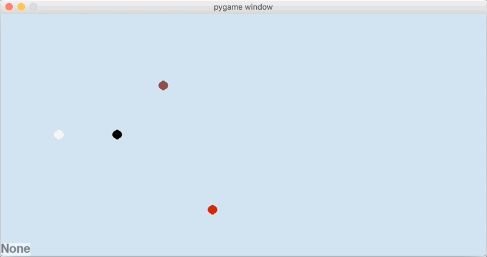
Now the intermediate system states are calculated ad hoc for the purposes of a nice animation. Nice.
Implementing collisions
The algorithm is a little boring without collisions. Let's add some.
With discrete time evolution, the only way to know if a ball-ball collision occurs is to use a collision detector to see if 2 balls are overlapping. However in the event-based algorithm, ball collisions are predicted ahead of time by solving a quartic polynomial defined from the balls' equations of motion.
For everyone's convenience, ball-ball collisions are already implemented in this demo branch, and can be turned on like so. If you're interested, here is the code for solving the quartic polynomial.
In [5]: engine.include['ball_ball'] = True
Running the simulation again now yields a more interesting picture.
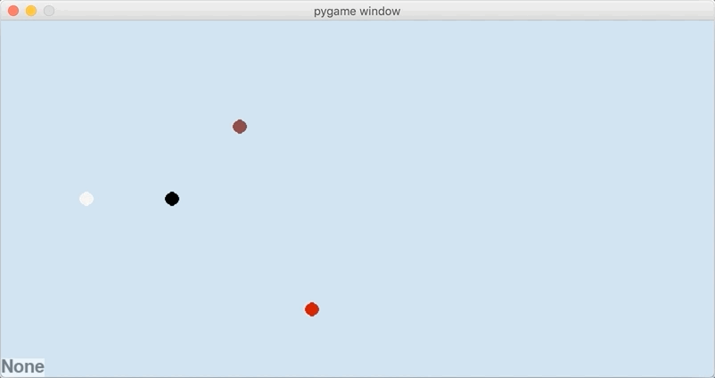
It's a shame that the balls fly right off the table, so while we're at it, let's include ball-cushion collisions too.
In [5]: engine.include['ball_cushion'] = True
The implementation of the ball-cushion interaction in this branch is non-physical. In fact, it's not even close to accurate, I just wanted to add another collision event to test the algorithm. In this overly simplistic implementation, ball-cushion collisions are resolved by reversing the velocity component perpendicular to the cushion surface. Of course this is highly unrealistic--for example the cushion has no interaction with the ball's spin. In the future, I will replace this with the (Han, 2005) physics model discussed previously.
Now, things are really starting to take shape.
I find this to be a pretty illustrative visualization of how the event-based algorithm advances the system state through time.
To me, its incredible to think that each event has been carefully chosen from the entire set of all possible next events. For example, the 3rd event is a sliding-rolling transition of the cue ball after its collision with the 8-ball. The 4th event is determined by considering all of the events in this diagram:
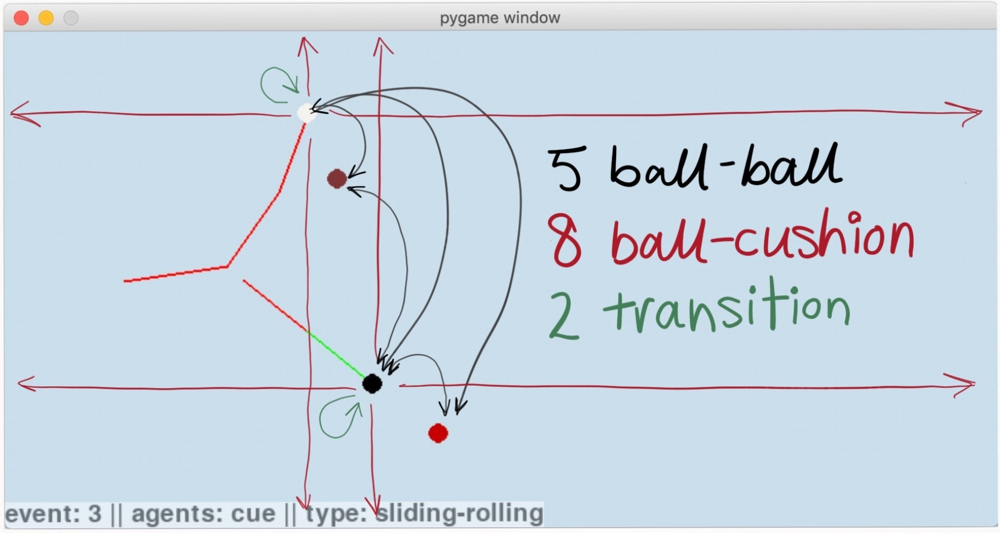
In total 15 possible events were considered, and the time until each of them was explicitly calculated. Based on the system state, it turned out that the one that physically occurs is a collision of the 8-ball (black) with the 3-ball (red), which you can see here:
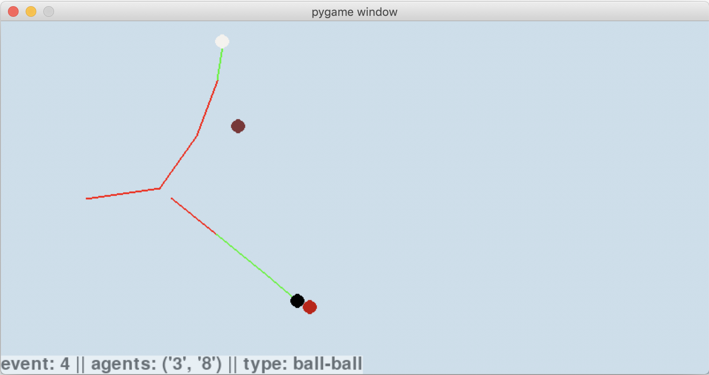
Comparing the algorithms
How do these results compare to the discrete time algorithm? With discrete time, collisions are detected retrospectively by seeing if there is any overlapping geometry. This leads to an inherent inaccuracy. Sure, it can be reduced by decreasing the time step. But how small does the timestep have to be and what effect does this have on performance?
To compare the two algorithms, I moved the brown 7-ball from the previous simulation just slightly, such that the cue-ball barely grazes it when using the event-based algorithm.
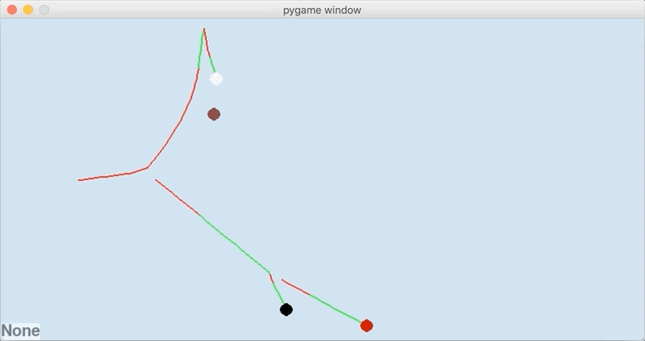
Any simulation evolved with a discrete time algorithm can't possibly be considered accurate unless it can recapitulate this event.
Let's see the corresponding discrete time evolution using a timestep of 20ms.
In [6]: import psim.engine as engine
...: engine.include['ball_ball'] = True
...: engine.include['ball_cushion'] = True
...: shot = engine.ShotSimulation()
...: shot.setup_test('straight_shot')
...: shot.cue.strike(
...: ball = shot.balls['cue'],
...: V0 = 1.35,
...: phi = 97,
...: a = 0.3,
...: b = -0.3,
...: theta = 10,
...: )
...: shot.simulate_discrete_time(dt=0.020)
...: shot.animate(flip=True)
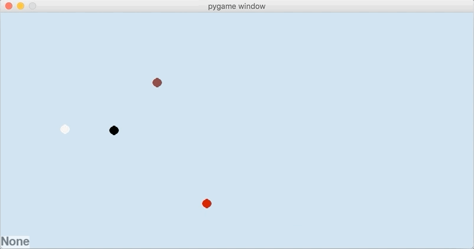
Wow, the cue didn't even come close to hitting the brown 7-ball after bouncing off the cushion. And the 8-ball is supposed to collide with the red 3-ball, but missed entirely. The problem is that the collision angle between the cue and 8-ball is slightly off due to discrete time error, and the net result is that the overlapping geometry overestimates how thin the cut on the 8-ball is.
So then how small must the timestep be for the sequence of events to match the event-based algorithm? To find out, I ran a series of shots evolved with smaller and smaller timesteps. For each, I considered it to be accurate if the presence and order of events matched what was found with the event-based algorithm. Here is the script:
#! /usr/bin/env python
import numpy as np
import pandas as pd
import seaborn as sns
import matplotlib.pyplot as plt
import psim.utils as utils
import psim.engine as engine
engine.include = {
'motion': True,
'ball_ball': True,
'ball_cushion': True,
}
def setup():
"""Return a shot object that is ready for simulation"""
shot = engine.ShotSimulation()
shot.setup_test('straight_shot')
shot.cue.strike(
ball = shot.balls['cue'],
V0 = 1.35,
phi = 97,
a = 0.3,
b = -0.3,
theta = 10,
)
return shot
def is_accurate(shot, true_shot):
"""Tests if series of events matches event-based event history"""
true_history = [(event.event_type, event.agents)
for event in true_shot.history['event']
if event is not None
and event.event_type in ('ball-ball', 'ball-rail')]
history = [(event.event_type, event.agents)
for event in shot.history['event']
if event is not None]
return True if history == true_history else False
# Simulate using event-based algorithm and store time taken
cts_shot = setup()
with utils.TimeCode() as t:
cts_shot.simulate_event_based()
cts_time = t.time.total_seconds()
# Init a dict that stores discrete time simulation stats
results = {
'dt': [],
'time': [],
'accurate': [],
}
# Run many discrete time simulation with decreasing timestep
for dt in np.logspace(0, -4.5, 30):
shot = setup()
with utils.TimeCode() as t:
shot.simulate_discrete_time(dt)
results['dt'].append(dt)
results['time'].append(t.time.total_seconds())
results['accurate'].append('accurate' if is_accurate(shot, cts_shot) else 'inaccurate')
results = pd.DataFrame(results)
sns.scatterplot(data=results, x='dt', y='time', hue='accurate')
plt.plot([results['dt'].min(), results['dt'].max()], [cts_time, cts_time], label='event-based', c='green')
plt.xscale('log')
plt.yscale('log')
plt.xlabel('Timestep [s]')
plt.ylabel('Calculation time [s]')
plt.legend(loc='best')
plt.tight_layout()
plt.show()
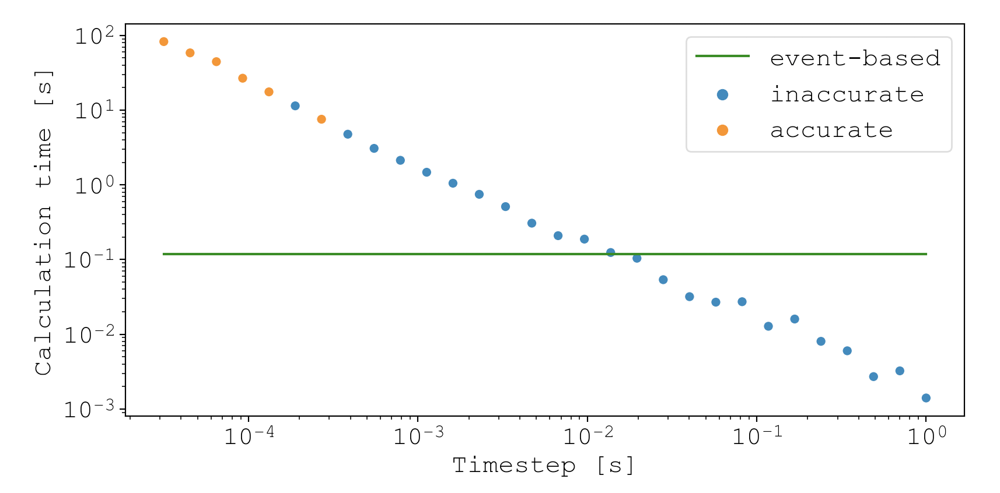
The results show that accurate simulations (i.e. simulations where the events match the event-based simulation) require timesteps below about . Unfortunately, this comes at a monumental speed cost. The fastest calculation time for accurate simulations was about 8s, which is about 80X slower than the compute time for the event-based algorithm (green line).
This isn't an extensive comparison between the two algorithms. But it illustrates the fundamental difference between them: except for inaccuracies arising from floating point precision, the event-based algorithm is as accurate as the underlying physics models, and performs reasonably fast. In contrast, discrete time algorithms produce an entire spectrum of accuracies, and choosing timesteps that yield sufficient accuracy typically leads to slow performance.
Strengths and weaknesses
The event-based algorithm has some features that may surprise people used to working with discrete time algorithms.
For example, if you want to simulate how a protein folds using molecular dynamics, simulating a 1 microsecond process takes 10X longer than simulating a 100 nanosecond process, since you have to take 10X more discrete steps. In other words, a longer simulated time means a longer compute time.
But for the event-based algorithm, simulated time has no influence on compute time. A ball could roll for 10 seconds or 5 decades.
Let me prove it to you. Let's take a table that has a length equal to the earth's circumference (and a width of 2m). Then put a ball on one end, strike it with an incoming cue speed of 10km/s, and let's see how long the simulation takes to unfold.
In [9]: import psim.utils as utils
...: import psim.engine as engine
...: import psim.objects as objects
...: engine.include['ball_cushion'] = True
...:
...: shot = engine.ShotSimulation()
...: shot.table = objects.Table(l=40_075e3, w=2) # table as long as earth's circumference
...:
...: # Set up cue ball
...: shot.cue = objects.Cue()
...: ball = objects.Ball('cue')
...: ball.rvw[0] = [1, 1, 0]
...: shot.balls = {'cue': ball}
...: shot.cue.strike(
...: ball = shot.balls['cue'],
...: V0 = 10000,
...: phi = 89.9999, # not quite straight down table, so it bangs into side cushions during its journey
...: a = 0.0,
...: b = 0,
...: theta = 0,
...: )
...: shot.touch_history()
...: with utils.TimeCode(): shot.simulate_event_based()
✓ Code finished after 0:00:00.736432
It took 0.73s to simulate a shot that journeyed for...
In [17]: shot.history['time'][-2]/3600
Out[17]: 8.923913780057543
9 hours. During which time the cue ball traveled the length of the earth and back. The reason it took so little compute time is because there were only 54 events.
In [44]: len(shot.history['event'])
Out[44]: 54
So what determines the compute time is the number of events, since that's roughly equal to the number of computational tasks.
I wanted to find out what else influences or doesn't influence compute time. So I calculated the compute time with respect to two variables of interest: (1) size of table and (2) number of balls. To do this, I initialized random system states with varying table sizes and number of balls. In each case, the initial starting positions and velocities of each ball were randomized. Then, I evolved the system using event-based algorithm, taking note of the compute time.
Here is the script.
#! /usr/bin/env python
import numpy as np
import pandas as pd
import seaborn as sns
import matplotlib.pyplot as plt
import psim
import psim.utils as utils
import psim.engine as engine
import psim.objects as objects
from matplotlib.colors import LogNorm
engine.include = {
'motion': True,
'ball_ball': True,
'ball_cushion': True,
}
def setup(num_balls=10, scale=1.0, v=1.0):
"""Return a shot object that is ready for simulation
Generates a random system state where each ball has initial speed `v`
Parameters
==========
num_balls : int, 10
How many balls should be in the simulation? They are randomly placed.
scale : float, 1.0
Scale factor for how big the table should be. 1.0 Corresponds to a 9-foot table
v : float, 1.0
The speed each ball starts with. The direction is randomly assigned
"""
shot = engine.ShotSimulation()
shot.table = objects.Table(w=psim.table_width*scale, l=psim.table_length*scale)
shot.cue = objects.Cue(brand='Predator')
for i in range(num_balls):
new_ball = objects.Ball(i)
# Ensure no balls overlap
while True:
pos = [
new_ball.R + (shot.table.w-2*new_ball.R)*np.random.rand(),
new_ball.R + (shot.table.l-2*new_ball.R)*np.random.rand(),
0,
]
for ball in shot.balls.values():
if np.linalg.norm(pos - ball.rvw[0]) > 2*ball.R:
continue
else:
break
else:
break
shot.balls[i] = new_ball
# Set position
shot.balls[i].rvw[0] = pos
# Set velocity
vel_angle = 360*np.random.rand()
shot.cue.strike(shot.balls[i], V0=v, phi=vel_angle, sweet_spot=True)
shot.touch_history()
return shot
event_results = {
'scale': [],
'balls': [],
'time': [],
}
ball_nums = range(2, 16, 2)
scales = np.linspace(1, 5, 10)
for ball_num in ball_nums:
for scale in scales:
print(ball_num, scale)
# Measure time for event-based simulation
shot = setup(ball_num, scale, v=2.0)
with utils.TimeCode() as t:
shot.simulate_event_based()
event_results['scale'].append(scale)
event_results['balls'].append(ball_num)
event_results['time'].append(t.time.total_seconds())
# Plot the results
event_results = pd.DataFrame(event_results)
event_results['time'] = np.round(event_results['time'], 2)
sns.heatmap(
event_results.pivot(index='scale', columns='balls', values='time'),
annot=True,
fmt='g',
cmap='mako',
norm=LogNorm(vmin=event_results['time'].min(), vmax=event_results['time'].max())
)
plt.title('Calculation time for event-based simulation [s]')
plt.show()
plt.close()
This script produces a heatmap.
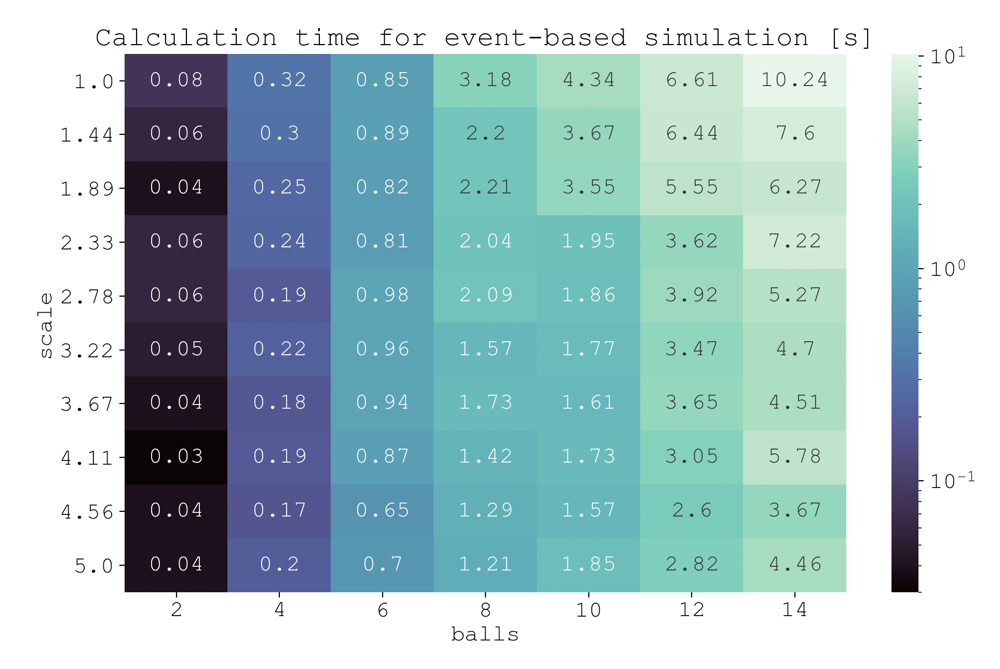
Looking at the heatmap, it's clear that increasing the number of balls increases computation time. This is because (1) the state of every ball must be updated every time step ( dependence on ), and (2) collision prediction of each ball with every other ball must be carried out every time step ( dependence on ).
You might expect that increasing the size of the table would increase computation time because there is more distance to travel. Yet keep in mind that in the event-based algorithm, collisions are predicted by solving the roots of polynomial equations. Whether the balls are far apart, close together, traveling fast, or traveling slow does not increase or decrease the computational complexity of solving the roots. The only effect these parameters have is changing the values of the coefficients. This is the power of the event-based algorithm.
The real effect that table size has on computation is the number of events. More events means more computation time. And when the table size increases, the balls become more spread out, which decreases the likelihood of events. So in fact, we see a decrease in compute time with respect to table size.
Conclusion
At this point in the project, I'm happy where things are. The ball trajectories match the trick shots of Florian Kohler, the event-based algorithm is working like a charm for transition events, ball-ball collisions, and ball-cushion collisions, and I have some primitive physics implementations of the ball-ball and ball-cushion interactions.
But I'm sick of looking at 2D animations, and I'm sick of setting up simulations by writing code. In the next post, I'm turning pooltool into an interactive game with 3D visualization using panda3d.
See you then.